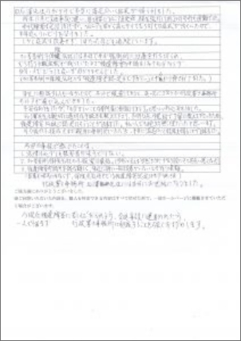
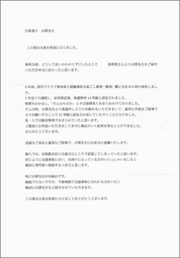
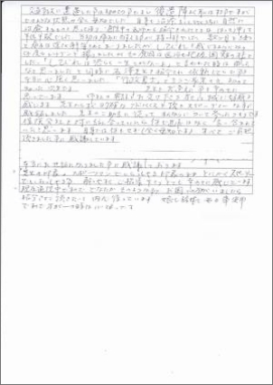

交通事故で正当な後遺障害等級を受けたい方へ【全国オンライン対応】
法務事務所
石澤法務事務所
後遺障害申請のプロ
代表石澤拓也
正当な賠償額を得るために
高度な専門知識がある
チームが対応するから、
業界平均 認定率の9.7倍を達成
医学のプロ
弁護士
元審査機関
元保険会社
2021年度の賠償額は
むち打ち(14級)認定
平均230万以上
その他の症状(13級以上)
平均2,800万円以上
の増額ができています。
業界平均 認定率の9.7倍の当社だから実現！
認定されなければ、報酬は1円も頂きません
※認定率の実績はこちら
認定されなければ
1円も費用は頂きません
100%結果に責任
０円
着手金など1円もお客様には
当社に支払いは発生しません。
認定された時のみ
報酬率は実質平均９%
業界最安値水準
他社の場合、「成功報酬率」とは別に
＋20万程度の別報酬が発生する場合が多いです。
当社は別報酬は1円も発生しません。
※1 診断書等の医証代等の病院へ文書料が５千~３万円程度、必要になります。（弊所への報酬ではありません）
※2 依頼者様から特別な依頼（病院から画像データの代理手配 1万円など）がある場合に費用が発生する場合があります。
※3 依頼者様が弁護士費用特約に加入している場合、弊所報酬を依頼者様加入の保険会社に請求させていただく場合がございます。
※4 一般的に弁護士費用等特約は、行政書士、弁護士の両方併用が可能です。
後遺障害の認定は、時間との勝負です。遅れると認定率が50％以上も減少の可能性も。
弊所では、依頼者さんに「今すぐにやるべきアクション」をお伝えしています。
なぜなら、後遺障害の認定率は、その「準備」の時期が早ければ早いほど認定率はあがりますが
、
逆に遅れれば遅れるほど認定率は下がり続けるからです。
例えば、事故直後に準備を開始したケースと症状固定のタイミングまで準備をしなかったケースでは30％近く
認定率は減少する事があり、症状固定後の1ヶ月間に、一定の準備をしない場合、認定率はさらに20％弱下がる
可能性があります。少しでも認定率を上げるために、早めの準備をお勧め致します。
病院や弁護士事務所、過去の依頼者さんからのご紹介が増えているため、時期によって受任ができない場合がございます。予めご了承ください。
10年前の開業以来、医療調査、申請最終チェックをスタッフに任せておらず、全て代表が担当するため
ご依頼人数を制限させていただいております。
認定率の高さにご好評を頂いており、2021年現在、病院や弁護士事務所、過去の依頼者さんからのご紹介が
増えているため、WEBからのご注文は毎月5名までにさせて頂いております。
約10年の業界経験と15,000件以上の
後遺障害データベースで安心の実績
正当な認定を得るために高度な専門知識があるチームが
対応するから、業界平均 認定率の9.7倍を達成
後遺障害
医学データのプロ
後遺障害の認定事案データ
分析に専門特化し、認定
基準を熟知した代表が
100%完全対応
交通事故
専門弁護士
大手保険会社の顧問10年
経験の弁護士
審査機関で
10年以上経験者
元認定機関の勤務経験10年
以上の担当者と提携
日本最大手
元保険会社社員
日本最大手保険会社の勤務
経験7年の担当者の提携
お客様からの喜びの声
よいしょし過ぎかもしれないですけど本当に信用できる間違いない先生でした。
知らない人がいるのがちょっと残念なぐらいもっと知って欲しいです
50代 都内在住 男性 弁護士に相談するも、弁護士費用特約が未加入のため断られたとのご相談
イメージ的にはどうしても弁護士に相談してそのままやるという思いが確かにあったんで、弁護士の交通事故ホームページを
調べて弁護士事務所に何社か連絡してみました。
しかし、弁護士事務所はホームページではいいことしか書いてなくて、『事故に遭ったらまず相談してください』『結果これだけ上がりました』って書いてあったんですが、実際、数社に電話を掛けたら、自分の場合は弁護士特約に入っておらず、全然いい
返事が弁護士から貰えなかった。
「全然ホームページと書いてあること違うじゃないか！」と思いました。
どうしようかってずーっと悩んで、それで、もうしょうがないかなと諦めかけた矢先に、
たまたまこちらの先生のホームページにヒットしまして、中を読ませて頂いて、これもしかしたらいけるんじゃないかって
ほのかな期待が出て、ダメ元というわけでないですが、先生に連絡しました。
今までだったら交通事故といえば、「示談」ということしか頭なかったんですけど、先生から話を聞くと後遺障害というのが
あって、ここはそれに特化した事務所とわかりました。
たまに僕に質問投げかけて答えてくれたり、すごい親切に教えてくれたんで、あっ、もうこの先生しかないなということで
お願いしました。内容的には、１０点満点で言ったら１０点です大満足の結果になりました。
{kind=link}
詳細はこちら
交通事故の専門の弁護士の先生たちが（後遺障害認定は）無理だって言ってるんですから。
（認定が取れたことが）信じられません。今でも。
60代男性 都内在住 弁護士から断られた後に、弊所にて手続きをし、14級認定
（職業柄 交通事故は）何回もやってます私も１５年（タクシー運転手を）やってるんで、私もある程度知識あったもんですから
今まで（別の交通事故で）ご依頼してた弁護士の先生に今回も電話したんですけども、
最初の段階で、後遺障害認定は無理だと言われました。
それで困ってて、たまたま同僚のドライバーが、インターネットで石澤先生の事務所を知って、教えてくれたのですが、
正直、半信半疑でした。なぜなら交通事故専門の弁護士の先生がダメだって言うものを行政書士の先生が出来るわけないという
先入観念がありましたから。
ただ、ダメ元でもう全然期待もしないでご依頼したっていうのが経緯なんです
今回のケース（弁護士さんに後遺障害は取れないと言われた）は、後遺障害認定が出るケースではないと思うんですよ。
それが、今回、早い上に認定されたっていうのが本当不思議でしょうがないです
本当びっくりしました。それは企業秘密なんでしょうけど。
石澤先生が弁護士の先生からも相談が来るっていう意味がわかります。
もちろん満足行く結果でした。びっくりしました。
早くてこんな親切にやっていただいて、もう満足どころじゃないです。お世辞でもなんでもないです。
だから人に紹介したいなっていう風に自然に思いますよね。みんな泣いてますから泣き寝入りしてますから。
今回はびっくりしました。専門の弁護士の先生たちが（後遺障害認定は）無理だって言うんですから
それを石澤先生がやられたっていうのは信じられません。今でも。
{kind=link}
詳細はこちら
後遺障害に苦しんでおられる方、交通事故に遭われた方、
一人で悩まず石澤法務事務所に相談することを強くおすすめします。
埼玉県 30代 女性
石澤先生のおかげで本当に満足のいく結果が得られました。
昨年11月に交通事故に遭い、首と腰にヘルニアを発症、腰を強打して約2カ月歩行も
困難でした。
歩行障害は完治しましたが、ヘルニアと首から腰にかけてむち打ちの症状が
出ていたので、半年近くリハビリを受けました。
しかし症状は改善せず、1年たった今でも通院しています。
加害者側の保険会社には、半年で半ば強制的に治療を打ち切られ、むち打ちの症状が
残っていたので後遺障害の申請をしなければならず、自分一人でそうしてよいか
分かりませんでした。
(加害者側の保険会社には「後遺障害認定はむずかしい」とやんわり脅されました。)
身近に相談する人もいなかったので、ネットで検索してみると、真っ先に
石澤法務事務所のHPが飛び込んできました。
不安はありましたが、「むずかしいことは専門家に相談してみよう」と
思い申込みをしました。
石澤先生は適切な手続きを教えて下さり、不明な点は電話で丁寧に教えて下さった
ため、後遺障害14級に認定してもらうことが
できました。私一人では絶対無理だったと思います。
その後の示談成立まで親身に面倒みていただき、本当に満足のいく結果を得ることができました。
今回の事故で感じたことは、
1.法律は必ずしも被害者の味方ではない。
2.加害者側保険会社の示談案は最低。(当然と言えば当然だが、かなり頭にきて具合が悪くなった。)
3.後遺障害申請や示談は難しく、身近に詳しい相談者がいないとかなり困難。(医者も味方にはならず、保険会社任せでは後遺障害認定はまず無理)
石澤先生には本当にお世話になりました。今現在、後遺障害に苦しんでおられる方、交通事故に遭われた方、一人で悩まず石澤法務事務所に相談することを強くおすすめします。
詳細はこちら
後遺障害14等級と認定された後、石澤先生の異議申立ての勧めで
適切な手続きご指導いただき11級に認定されました。
沖縄県 男性 40代
この度は大変お世話になりました。
事故当初、どうして良いかわからずにいたところ接骨院さんより石澤先生を
ご紹介いただき本当に良かったと思います。
2年前、原付バイクで乗用車と接触事故を起こし鎖骨・胸部・腰と合計6か所の
骨折をしました。1年近く通院し、症状固定後、後遺障害14等級と認定されました。
時間もかかるし、「そんなものか」と半ば面倒臭くあきらめかけておりました。
そんな時、石澤先生より異議申し立てのお勧めをいただきまして、適切な手続き
ご指導下さりお願いすることで11等級に認定され直していただくことになりました。
私一人では絶対無理であきらめていたと思います。
ご親身にお世話いただきまして本当に満足のいく結果を得ることができました。
ありがとうございます。
迅速なご対応と適切なご指導で、石澤先生には本当に感謝いたします。
個人では、対保険会社には適当なところで妥協してしまっていたと思います。
同じように交通事故に遭い、お困りになっている方がいらっしゃいましたら絶対に
専門家へ相談するべきだと思います。
特に石澤先生がお勧めです。縁起でもないですが、今後周囲で交通事故に遭われる方がいたら絶対に石澤先生をご紹介させていただきます。
この度は大変お世話になりましてありがとうございます。
詳細はこちら
全く無知のため、先生と出会えたことを幸せに思っています。
秋田県 男性 60代
交通事故の遭遇したことは初めてのことですし、後遺障害はよく耳にはしますが
どのような状態か全く無知でした。自身も治療をしていくうちに自然に治癒する
ものと思っており、通院中の医師から紹介されたときははっきり申して半信半疑
でした。当初は痛みに耐えることが精一杯でした。
数か月経つと痛みは徐々に解消されてまいりましたが、しびれを感じるようになり
何度もレントゲンを撮りましたが、その原因は医師も把握困難のようでした。
「しびれはおそらく一生とれないよ」と言われた時は困ったなと思いました。
と同時に、石澤先生を紹介され、依頼したことを本当に心強く思いました。
「行政書士」というご職業さえ初めて知った次第です。全く無知のため、先生と
出会えたことを幸せに思っています。御社の電話をお受け下さる方々は誠に
好感を感じます。
先生からすぐ的確なアドバイスをいただき、スピーディーなことに感銘しました。
先生のご助言に従って私なりについて参ったつもりです。保険会社と話し合って
いたら、何も進展はなく言い含まれていたと思います。自身ではなにもせず
すべてご負担いただきましたことに感謝しています。
先生の印象→スポーツマンでいらっしゃる印象のまま、とにかくスピーディーでいらっしゃること。
分かりやすくご指導くださり、とても幸せに感じています。
現在通院中ですので、どなかたそのようなことでお困りの方がいましたら紹介させていただきたいと内心待っています。
娘も孫娘も毎日車使用ですので、万が一の時は心強いです。
詳細はこちら
すべてのお客様の声はこちら
こんなお悩みの方にオススメです
保険会社に後遺障害ではないと言われた
けど納得できない方
後遺障害の認定を受けて、正当な示談金を
得たい方
保険会社に言われるまま任せてしまって
いいのか不安な方
弁護士費用特約に加入していないため、
弁護士に断られてしまった方
弁護士に依頼したけど満足のいく結果が
得られなかった方
後遺障害の申請については、最初から
後遺障害の専門家に任せたい方
依頼している弁護士が、後遺障害の申請に
詳しくなさそうな方
医師に「後遺障害には認定されないよ」と
言われた方
“交通事故の専門家”だと高々に宣言している
弁護士事務所で認定に失敗した方からの相談が急増
驚いたことに、弁護士事務所のほぼ100%が”交通事故の専門家”と名乗りますが、私は彼らを少なくとも”後遺障害の申請の専門家”だと認めません。
「保険会社との対応」「医者とのやり取りのアドバイス」「申請書類のチェック」など確かに実施してくれますし、たくさんの成功事例で信用できそうに見えます。
しかし、最も認定率に直結する「全国の認定データの調査及び、調査結果を踏まえた適切な診断書の医師への作成依頼」を99%以上が実施しておらず、肝心の認定率を大きく落としてしまっているのです。
これは実際に、弊所に乗り換え頂いた多数の被害者の方々のデータから分かった事実です。
交通事故専門”の弁護士に依頼しても納得がいく認定ではなかった、
「再申請しても無理」と言われても、諦めるのはまだ早いのです。
交通事故専門の弁護士は「示談交渉」の専門家、「医療調査や後遺障害手続き」は専門ではありません。
あくまで専門性の違いです。たとえば、弁護士は資格上、税理士業務も可能ですが、税理士業務が得意であるかと
いえば、そうではないことが多いと思います。実際、多くの方が会計や税のことは
弁護士ではなく、
税理士に依頼していることからも、その事実は明らかです。
あまり認知されていないのですが、「後遺障害申請の上手さ」については、弁護士ではなく、
行政書士が専門家の分野なのです。「後遺障害の申請」は行政書士、「後遺障害認定後の裁判等の示談交渉」は弁護士、という使い分け※が大事です。
※当所では、示談に強い弁護士の紹介もしております。
保険会社は、交通事故被害者の味方ではありません
保険会社が不適切な後遺障害申請を行い、被害者が本来もらえるはずの賠償金がなくなる問題が後を絶ちません。日本最大手の保険会社の元社員によると、このような不適切なやり方が通常フローであり、この問題がなくなることはないでしょう。
保険会社は味方ではなく、あくまで加害者と契約をしている
加害者側の代理人。
保険会社としては、会社利益として賠償を認めさせない様にしたいのです。
事故は、被害者さんにとって一生に一回あるかないかの事件。
その経験を次に活かすことがあまりありません。
一方で保険会社は一担当者が毎日何十件と案件を処理しています。
つまり被害者さんと保険会社で、知識と経験に圧倒的な差があるのです。

しかし問題本質は、その知識の差ではなく（実際間違った知識を不勉強で言ってくる担当者もいるので）、「保険会社の人は事故に詳しくて、正しいことを言っているんだろう」という被害者側の思い込み、勘違いにあり、その思い込み、勘違いを保険会社が巧みに利用し、保険会社にとって有利な嘘をあたかも真実かのように被害者さんに伝えてくることにあります。
被害者側の思い込み、勘違いを利用する保険会社の手口
しかし問題本質は、その知識の差ではなく「保険会社の人は事故に詳しくて、正しいことを言っているんだろう」という被害者側の思い込み、勘違いにあり、その思い込み、勘違いを保険会社が巧みに利用し、保険会社にとって有利な嘘をあたかも真実かのように被害者さんに伝えてくることにあります。
よくあるのが、治療が一定期間続くと「残った症状については、保険会社から後遺障害の申請をしておくので、認められたらお金がでますよ」とあたかも認定されるかのように言って、ほとんど認定されず、被害者が意見を言うと「別に弊社（保険会社）が判断しているわけではなく、第三者機関が判断しているんですよ」と言う手口。
これらのことは、弊所の日本最大手の元保険会社歴10年の担当者がいることから詳しく知った事実です。
事故被害者の8割以上が不当な示談金にされてしまいます。
多くの被害者さんがその嘘を信じて不利益な条件での合意をしてしまうことが非常に多いです。
私は、元来、知識の差や立場の差を利用して、理不尽な行いを強制してくることが大嫌いですし、
そのことで困っている方がいるなら少しでも力になりたいという思いでこの業務をやっています。
「～さんの場合は大した怪我ではないね」
「医師にも確認しましたが、治療はもう終了です」
「普通は3～4ヶ月で治療は終了ですね」
など、医師でもないのに医学的見解を延べて治療の打ち切りをし、任意保険基準ですと言って、
安い示談金を提示して、サインさせ、自分たちの利益を守る。
保険とは本来そのようなものではないと思いますが、起きている現実は被害者に非常に不利益な
流れとなっています。
なにも知識がなければ、8割以上の方がこの形で示談してしまっていると思います。
後遺障害・異議申立 石澤法務事務所 代表紹介
代表紹介
石澤拓也法務事務所 代表
行政書士 石澤 拓也
日本行政書士会連合会
登録番号 第12101578号
一部上場企業「SEIKO」の主要事業にて、法務部に所属、取締役会や株主総会等、要件書式の作成とともに、損害賠償請求など訴訟紛争を担当/行政書士資格を取得後、後遺障害手続きで全国で最も有名なグループに所属ノウハウを蓄積。
ここでの経験を活かし、より精度の高い後遺障害手続きを研究、データを蓄積/現在では交通事故専門の弁護士からも後遺障害部分のみを依頼を受け、後遺障害の専門家として業務を行う。
北海道生まれ/立命館大学法学部卒業(在学時はアメリカンフットボール部に所属し日本一を達成)/冷静かつ熱く、
全力でご依頼業務を進めます。
私が後遺障害専門サービスを立ち上げた理由
“じいちゃんが事故に遭い、専門家がいなかったため保険会社に言われるがまま、理不尽な示談になった
私が交通事故業務を担うきっかけになったのは、幼い日の残念な体験です。
私は自他共認めるおじいちゃん子で、運転の好きな祖父はいつも私は助手席に
乗せてドライブをしてくれていました。
そんな祖父が私が小学生の頃に、被害者として事故にあってしまい、大きな
怪我をしました。
今現在の私の知識と経験があれば、当然、治療費や、症状も完全には治らなかった後遺障害の補償も充分に受けられる状況でしたが、あろうことか、加害者側の大きな保険会社の主張を丸呑みする形になってしまい、後遺障害どころか、治療費用も充分に受けることができませんでした。
自分の大好きな祖父を襲ったこの理不尽が経験から、私は法律に関わる仕事を生業としたいと思うようになりました。
“交通事故専門”の弁護士事務所からの乗り換えが意外に多くてショックを受けた
交通事故を中心に業務を開始した当初、意外なほどの多く驚いたのが、最初に交通事故の弁護士事務所に依頼をしたけれど、後遺障害認定で納得できずに、弊所に乗り換えたいというご相談でした。
私自身、交通事故の専門という弁護士事務所は、当然ながら後遺障害申請にも精通していると考えていました。
しかし、それは私の勘違いでした。
それが明らかになったのは、そのような相談の申請内容を確認した時です。そこには、交通事故専門”と高々に宣言している弁護士事務所が、「後遺障害の専門スタッフがいる」や「医学的知識が豊富」といったことをうたっているにも関わらず、後遺障害認定手続きにおいて、一番重要な認定要件や、そのための書面作成のための重要なポイントを欠く申請書類が多々あったのです。
その中には、「医師に後遺障害診断書をお願いする時に一緒に渡すように」と紙を1枚渡されただけという方もいらっしゃいました。実際そういった過程で出来上がった診断書を見ましたが、後遺障害に認定されるためのポイントが抑えられていないものが多かったです。
「交通事故の専門家」という言葉の誤解
その時に、交通事故の専門性には、「示談交渉の専門」という意味と、「後遺障害の専門」という意味の2つがあることに気づき、弁護士が「示談交渉の専門家」だけでなく、「後遺障害の専門家」ではないことを強く確信しました。
多くの人が、交通事故専門というと「示談交渉の専門家」に加え、「後遺障害も専門家」であるとも思ってしまうのが、この業界の一番の誤解なのです。
あくまで弁護士は「示談交渉の専門家」であり、そこに高い専門性を発揮されるように日々業務を行っていらっしゃいますが、
「後遺障害の手続き」の部分については、その専門性発揮する業務ではないことが大きな原因と思います。たまに弁護士事務所が「（専門）スタッフ」に後遺障害については任せているのがそれを表しています。
「後遺障害の専門家」として認定率9倍の実力に、被害者救済に全力で戦う
そこで私は、世の中に数多存在する「示談交渉の専門家」ではなく、全国的に圧倒的に不足している「後遺障害の専門家」として、被害者救済を図ることを決めました。
試行錯誤やデータ蓄積の結果、現在、「示談交渉の専門家」が行う後遺障害の認定率と比較し、約9倍の認定率を誇るまでになり、「示談交渉の専門家」からも、後遺障害の認定について多数の紹介を受け、業界で頼られる存在になりました。
後遺障害認定に特化した医療調査
資料不足を無くして適正な等級認定を
自賠責保険における後遺障害等級の認定は、明確な認定基準がすべて公開されているわけではありません。 そのため、資料が不足して適正な等級認定がされないことが多々あります。
そこで、不足資料なく申請することが重要になりますが、それには認定基準を熟知した上での、医師への照会や被害者様への聞き取り等が重要です。
医療情報が少ないことで、非該当や本来受ける
べき等級より低い等級になることがあります
後遺障害の医療調査を最も得意とする当事務所が、医師への照会を行いその情報を医証として揃えます。
正当な賠償額を得るまでの6STEP
STEP
1
電話で予約 or LINEですぐに無料相談
医療調査等、代表が外出が多いためLINEで 直接ご相談頂く方がスムーズです。
※初回の電話は相談予約のみ受け付けております。
STEP
2
ご都合が良い日時に代表とオンライン無料相談（30分）
被害者の皆さまのご状況に合わせて弊所の利用で認定される可能性があるか
判断させて頂きます。

STEP
3
ご依頼を希望される場合、必要書類のご提出
弊所から委任状、同意書等の必要書類をお送りしますので、
記名押印後、ご返送をお願いします。
STEP
4
医療データを元にしたプロの精密な調査スタート
弊所にて、依頼主さんの診断書等の状況から、過去データを参考にしながら、
病院に聞き取りや診断書の依頼など医療調査を実施
※場合により、依頼者さん経由で診断書を依頼する場合がございます。
その際はご協力のほど宜しくお願い致します。
STEP
5
弊所から申請・結果のご報告
弊所から申請・審査中、認定機関への説明を実施・認定結果を依頼者さんへご報告
※認定されなかった場合、お客様のご負担金額は発生しません
STEP
6
認定により大幅に増額した示談金で解決
認定結果を根拠に、裁判基準で示談。14級で平均230万以上、
それ以外の13級以上の平均2,800万円以上の増額が見込めます。
利用前の注意点
・ご自身の考えで申請内容や書類を考えたい方はご遠慮ください。
ほとんどの場合において、認定率を上げる内容でないことが多いです。
・当社の認定率（※異議申立てに限る）は65%（前年度実績）です。
確実に認定が取れることを保証はしておりません。
・委任状への記名押印など必要資料を長期間いただけない場合や音信不通な場合に、
業務を継続できない場合はあります。
交通事故被害者の一番の味方になって戦います
交通事故は全くこちらに不注意がなくても起きてしまうことがあるにも関わらず、多くの方が
保険会社から嫌な思いをさせられたり、本来補償されるべき賠償を受けれなかったり、残った症状に対し
なんの補償も受けられないことが往々にしてある世界です。
私はそれで泣き寝入りするのが我慢できません。少なくとも弊所に依頼してくださった方は
そのように想いをして欲しくないという想いで、日々業務にあたっていますし、
交通事故・後遺障害に関しては強い自信を持っております。
後遺障害・異議申立でお悩みなら、石澤法務事務所をご活用ください。
後遺障害認定を受けるための異議申し立ては被害者の権利です。また何度でも申請可能です。
もし私が力になれることがありそうであれば、いつでもお気軽にご連絡ください。
無料相談の「予約」専門ダイヤル
予約受付時間 月～金曜日 9:00-18:00
LINEで代表にいつでも相談
LINEで無料相談
メール相談ご希望の方はこちら
お電話で
無料相談
LINEで無料相談